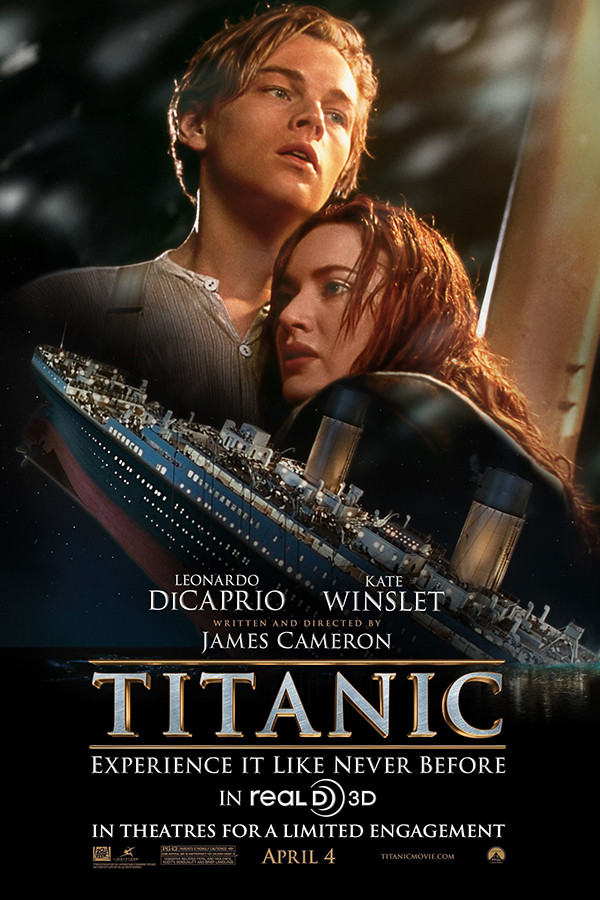

|  | Titanic
Relançamento 13 de abril de 2012
Direção: James Cameron
Roteiro James Cameron
Elenco: Leonardo DiCaprio, Kate Winslet, Billy Zane
Uma expedição aos destroços do Titanic leva uma sobrevivente do naufrágio a relembrar uma grande história de amor que viveu no navio. Em 1912, na única viagem do que então era o maior navio já construído, Rose (Winslet) é uma jovem da alta sociedade prestes a se casar com seu rico noivo. Mas a bordo do Titanic ela conhece Jack Dawson (DiCaprio), um jovem simples e aventureiro, e se apaixona pelo rapaz. |
|
Acesse mais em YouTube SESSÕES
|